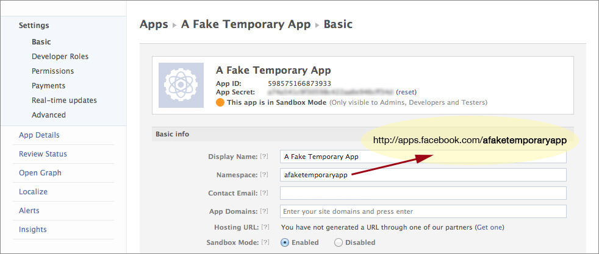
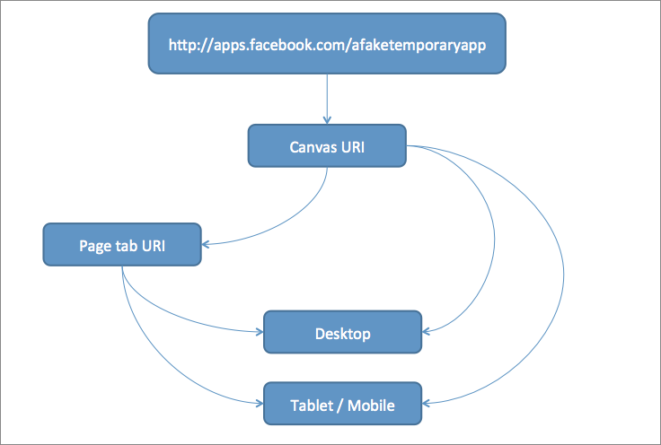

Understanding user journey in Facebook applications
Facebook applications (apps) are wonderful medium to promote products and build up a fan base. Facebook canvas apps can be subdivided into two types based on their type of use − canvas app and page tab app. You may be familiar with canvas apps in form of Facebook games. Page tab app on other hand resides inside the area of a Facebook Page. There are different things that we can do and cannot do with each of the app type.
Basic settings for a Facebook application
The app settings page provides options to set destinations for various versions of your app so the application can provide a better user experience to end user despite of device type they use to access the app. Following flow chart explains how Facebook detects the device and redirect users to appropriate versions of the app.
Flow chart explaining process flow and user journey in Facebook applications
Let’s see what happens when a user clicks on a this fake Facebook application link i.e. http://apps.facebook.com/afaketemporaryapp
Canvas app
For canvas app, it is pretty straight forward that if it is being accessed from a desktop then it will display an iframed version of app inside Facebook framework but for users accessing it from a mobile or tablet device, it will redirect users to mobile URL of the app instead of opening it inside of Facebook framework. This is the same URL that can or cannot be same as desktop URL.
Page tab app
For a page tab app, users coming from a desktop are redirected to the page tab app URL set in app settings. If URL is wrong or incomplete, it will return a page not found error. If the app is not installed on the specified Facebook page but settings are correct then it will simply go to the page timeline. Similarly, users coming from mobile or tablets devices will be redirected to mobile URL set in app settings, therefore not opening the app inside a Facebook framework.
Using page tab app, certain useful options are available such as to detect if visiting user has Liked the page or not. This particular option is widely used for marketing purpose and known as “fan-gate” in industry.
Facebook applications enhance the overall user experience with great use of Graph API. Games and other such kind of applications use the Graph API to achieve high levels of interactions between connected users of this application. In a next part of this article, I will discuss the methods I have tried and used to enhance the user experience in user journey for users coming from different type of devices.